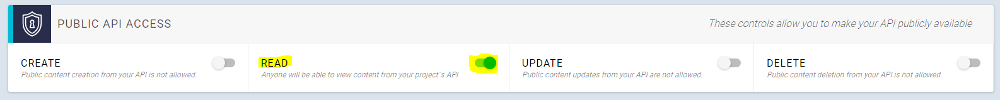
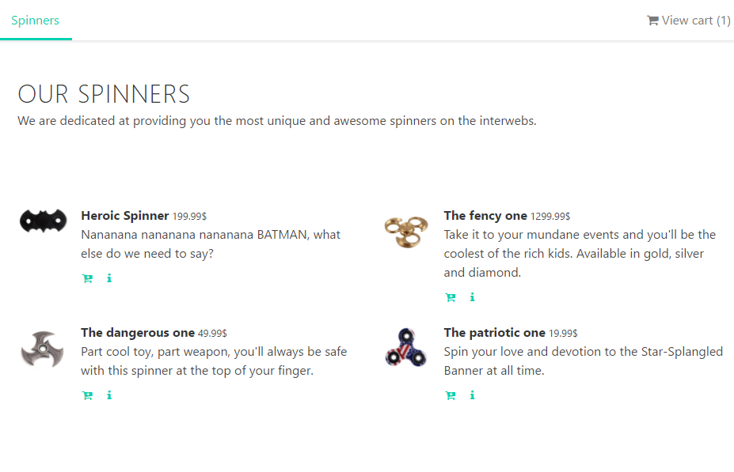

Native Extension for Node.js
https://www.nan-labs.com/blog/native-extensions-for-nodejs/
If you are a Spanish reader you can read this post in Spanish here: Extensiones Nativas: ¿dónde empezar?
In this article we will talk about the most important concepts to develop native extensions for NodeJS. Later, I will show how to build our first native extension with a practical example. And finally, I will leave some links to read more about it.
The basics to get started with native extensions
In simple terms, we can say that a native extension is a set of C++ implemented logic that can be invoked from JavaScript code.
At this point, it’s interesting for us to clarify how NodeJS works and which are the parts involved in it. It’s important to know why we can talk about two languages (JavaScript & C++) under the NodeJS context.
I like to explain it this way:
- JavaScript: it’s the coding language.
- V8: it’s the engine that runs our JavaScript code.
- Libuv: it’s a C library that provides us with asynchronous execution.
Now, where can we place native extensions? I will choose write/read disk action as an example to explain it. Neither JavaScript nor V8 provides us with disk access. Libuv provides asynchronous execution. But, with NodeJS we can write/read to disk, right? Well, this is the point where native extensions get into the match. The fs module is implemented using C++ (it has disk access) and eventually exposes methods (like writeFile and readFile) which can be invoked from JavaScript.

Once we have learned this, we can start taking our first steps in native extensions. Let’s talk about the tools we need.
Basic tooling to build a native extension
Binding.gyp file
This file allows us to specify how we need to compile our native extension. One of the main thing that we need to define are the files that will be compiled and how we will call the final binary. It has a JSON like structure, and the keys to get this configured are sources and target.
Node-gyp
It’s the tool that allows us to compile our native extension. It’s implemented in NodeJS and it’s bundled with npm so we can just run npm install and that will compile our native extension. When we run npm install, it will detect our binding.gyp file included in our root folder and then it will start compiling.
Also, it allows us to make release(default) or debug builds. As a result, a binary file with .node extension will be created inside a release or debug folder, depending on how it was configured.
Bindings
It’s a NodeJS package which allows us to export our native extension. It’s in charge of searching in a build or release folder for us.
N-API
It’s C API that allows us to interact with our engine in a completely abstract way. For me, it’s the result of an evolution that tries to port node to different architectures.
N-API provides stability and compatibility between different node versions. That is, if my native extension is compiled to node 8.1, I don’t need to compile it again for node 8.6 or 9.3. Thus making the life of the maintainers and contributors easier.
At this moment, N-API is under experimental state.
Node addon api
This NodeJS module provides us with a C++ implementation of N-API and allows us to use the language advantages.
First steps in the native extension world
Note: For this example, I used node 9.3.
To get initiated on the native extension world we will use the classic hello world example. The idea is to not overload the code with extra logic so we can focus on the minimum necessary code.
We start initializing npm so that we can then install our dependencies:
npm init
Now, as we said, we install our dependencies:
npm i node-addon-api bindings
At this point we need to create our C file with our logic:
#include <napi.h>
Napi::String SayHi(const Napi::CallbackInfo& info) {
Napi::Env env = info.Env();
return Napi::String::New(env, "Hi!");
}
Napi::Object init(Napi::Env env, Napi::Object exports) {
exports.Set(Napi::String::New(env, "sayHi"), Napi::Function::New(env, SayHi));
return exports;
};
NODE_API_MODULE(hello_world, init);
view raw hello_world.cc hosted with ❤ by GitHub
This file has three important parts that will be explained from bottom to top:
- NODE_API_MODULE (Line 14): The first argument is the native extension name and the second one is the name of the function that initializes our extension.
- Init (Line 10): This is the function that will initialize our native extension. In this function we must export the functions that will be invoked from JavaScript code. To do this, we need to set the name of the function to the exports object and the function itself that will be invoked. This init function must return the exports object.
- SayHi (Line 3): This function is what will be executed when we invoke our native extension from our JavaScript.
Later, we need to create our binding.gyp file that will contain our native extension configuration:
{
"targets": [
{
"cflags!": [ "-fno-exceptions" ],
"cflags_cc!": [ "-fno-exceptions" ],
"include_dirs" : [
"<!@(node -p \"require('node-addon-api').include\")"
],
"target_name": "hello_world",
"sources": [ "hello_world.cc" ],
'defines': [ 'NAPI_DISABLE_CPP_EXCEPTIONS' ]
}
]
}
view raw binding.gyp hosted with ❤ by GitHub
Finally, the JavaScript code that will require our extension and invoke it.
const hello_world = require('bindings')('hello_world')
console.log(hello_world.sayHi());
Now, we just need to compile our extension running npm install and run the JavaScript file that is used:

And that’s it. We just run our native extension.
What we had before N-API?
I find it important to know the context and history of native extensions since it gives access to a lot of documentation and examples. The idea is for N-API to eventually replace NAN. For that reason we should look back to NAN for a moment.
NAN? Yes, Native Abstraction for Node.js. NAN is a C++ library that provides us with V8 abstraction, but it doesn’t allow us to abstract ourselves from the V8.
In new NodeJS releases, there could be V8 changes that could break our native extension. Using NAN is a way to avoid this problem.
Further steps to develop your native extensions
As I said, knowing about NAN allows us to learn from its examples and documentation. It’s a good complement to our native extension learning process.
- NAPI examples can be found in here.
- Node-addon-api examples can be found in here.
- Nan examples can be found in here.
- Another good source are tests here.
- To learn more about native extensions here.
Conclusion
Learning about native extensions helped me to understand how NodeJS works and how it’s composed. There are more than one scenario where we can use them, such as performance boosts, C/C++ library integrations, or integration with legacy code.
In summary, it’s an excellent way to learn about NodeJS internals.
If you have any doubt, please post a comment and I will help you.
Taking part in the community
I made this post for a contribution to LaPlataJS. It’s a local JavaScript community where I participate helping with talks, events organization, or posts. I think that whenever you can you should join a community. For me, it has a lot of benefits. You can know really good people, share ideas, learn things and, sometimes, go for a beer with your folks.
A GraphQL & Node.js Express Tutorial: Powerful E-Commerce with GraphCMS
https://snipcart.com/blog/graphql-nodejs-express-tutorial
In a rush? Skip tutorial steps or GitHub repo & live demo.
Trends... they come and go.
Take those fidget spinners for instance, aren't we all tired of seeing them everywhere, right?
Chances are we're still stuck with them for a little while, and then we'll never hear from them again.
Nowhere is the "trend" phenomenon more obvious than in our developer universe, where technologies and shiny new toys appear every day. In this post, I want to try something new that, unlike spinners, is probably here to stay.
I'm talking about GraphQL.

Today, we’ll take part in this up-and-coming technology by sharing a GraphQL tutorial, while at the same time trying to capitalize on the last breath of the spinners trend by setting up our own online shop. We'll integrate GraphQL with Node.js Express to create a small e-commerce app.
In fact, we'll be using the GraphQL-based headless content management system, GraphCMS and Apollo.
Live demo and full code repo included at the end. ;)

Let’s spin our way (see what I did there?) into all of the following:
- Creating a Node.js Express app
- Setting up GraphCMS
- Querying the GraphQL API using Apollo client
- Creating our shop with Snipcart
But let’s not get ahead of ourselves and start by digging deeper into what we're working with here.
What is GraphQL?
GraphQL is a new syntax for your API that defines how to fetch data from one or many databases.
Since this new query language for APIs was open sourced in 2015 by a small company named Facebook (which used it for its mobile apps since 2012), a growing community has been supporting and developing it.
It has been created to solve some structural problems developers encountered when they started to create apps that were way more complex than before.
As for Facebook’s use case, they wanted to put all of the website features into the users' hands, with their mobile apps, back in 2011. That’s when they started to think about a new way of doing things. A way that would make traffic between clients and servers simpler, more organized.
GraphQL was the result.

They made it possible to manage data over a single endpoint via HTTP. Each query you send to your API gets you exactly what you want. What I mean here is that you will receive on the other end nothing more and nothing less than what you need. The data needed is determined client side instead of letting servers control it, helping to build apps that are way faster and more stable.
Its _type schema system_ regroups all the data you can access, no matter where it is stored, under different fields. You can relate these to one another in order to get the information needed in one simple request.
Now, this is just a quick GraphQL overview. We won’t get into all the specifics here since it’s not the goal of this post. But there are plenty of helpful resources available should you want to learn more:
- Here’s a nice tool to help you get started with it.
- To dive straight into it, take a look at the GraphQL specs.
Why GraphQL over REST APIs?
This topic has already caused a lot of discussions on dev forums, and what you get out of these is that you can’t compare both directly. They are not the same, and GraphQL won’t take over REST APIs tomorrow morning. Whereas the first is, as I already mentioned, a query language, the other is an architectural concept.
You can actually wrap a REST API in GraphQL. This is good to know if you want to try GraphQL without throwing away your existing infrastructure.
Still, more and more developers will turn towards GraphQL for their new APIs, because it solves a lot of the problems that pushed them to scratch their heads with REST’s multiple endpoints.

GraphQL vs REST API queries [source]
The latter means you have to make different calls to different endpoints for a single request, like loading a page. It made the process slower as you create more complex architectures. And it can rapidly become a real mess with REST APIs for that reason.
So, what should you do?
It’s entirely up to you, but there are situations where GraphQL starts to look like the best option:
- If you have multiple clients, because they simply write their own queries, in the language of their choice, GraphQL supports them all;
- If you work on different platforms: web, mobile, apps, etc;
- If your API is highly customizable.
Speaking of highly customizable, we'll try to determine how we can fit Snipcart into all of this, with the help of an Express app. Before jumping in the demo, let's learn a bit more about this Node.js Express framework we'll use.
What is Node.js Express?
Express is a fast, unopinionated, minimalist web framework for Node.js.
We've already played with Node before, but here we'll use Express for the server-side of our demo. It's probably the most well-known framework for Node.js right now. Official docs over here.
It's a simple framework that adds fundamental web application features on top of Node.js. It was one of the first out there and is widely used by lots of companies that work with Node.js (IBM, Uber & more).
There's a ton of modules you can add on top of it to handle most use cases. Like a body parser we'll use today to deal with JSON payloads.
Although there are some alternatives such as Koa and SailsJS, I decided to go with the classic and stick to what I know best.
It's now time to put these awesome tools to use; let's sell some spinners!
Building an e-commerce app: Node.js Express & GraphQL demo
In this demo, we'll craft a small shop web application from scratch. Other than Express we'll be using several technologies to achieve this goal.
Namely, apollo-client from folks at Apollo, a very neat framework that makes it easy to query a GraphQL API.
The GraphQL API will be handled by GraphCMS.
On top of that, we'll add our e-commerce solution, Snipcart. ;)
Getting started with Node.js Express
We'll start by initializing a new node project.
npm init
Answer the quick questions that the CLI will ask you.
This will create the project.json file and then we'll be ready to start for real.
We'll first need to add express npm package.
npm install express --save
Then, we'll create the entry file of our application. Let's name it server.js.
// /server.js
const express = require('express')
const app = express()
app.listen(3000, function() {
console.log('Listening on port 3000.');
})
The first thing we'll do is to set the view engine we are going to use. In our case, we'll go ahead with pug.
npm install pug --save
Then we'll add these lines to the server.js file.
// /server.js
app.set('view engine', 'pug')
app.set('views', path.join(__dirname, '/app/views'))
This will set our default view engine and the path where our views will be located.
We'll then need to create a router to show the list of our products. Create a new directory named app in your root folder and then create another folder named routers in the former.
We'll create a router named products.js.
// /app/routers/products.js
const express = require('express')
const router = express.Router()
router.get('/', (req, res) => {
})
We'll need to register this router in our app. Add these lines to server.js file:
// /server.js
const products = require('./app/routers/products')
app.use('/', products)
Setting up GraphCMS
Now for GraphCMS. You'll need an account: create one here.
Once logged in, create a new project. I named mine Snipcart demo. Once the project is created, click on Content and then on Add Content Model.

We'll now define the fields of the product, add the necessary fields so your model looks like this:

You can then create a few products. When it's done we'll need to get the GraphQL API endpoint and make it readable.
Click on Settings in the menu, and enable Public API Access.

Then note your Simple Endpoint URL in the Endpoints section.
Querying our GraphQL API
Back to the code now. We'll need to change our products.js router to fetch the items from the API. Before that, we'll create a small service module that'll interact with the API using Apollo client.
Let's install the modules we'll need from npm.
npm install apollo-client graphql-tag node-fetch url numeral --save
We also install node-fetch because the fetch method used by apollo-client is not yet available in Node.js.
url and numeral package will be used for display purposes that we'll see later.
We'll also create a configuration file in our project root containing things such as an API endpoint URL and Snipcart API key.
// /config.json
{
"apiEndpoint": "https://api.graphcms.com/simple/v1/cj3c0azkizxa6018532qd1tmh",
"snipcartApiKey": "MzMxN2Y0ODMtOWNhMy00YzUzLWFiNTYtZjMwZTRkZDcxYzM4"
}
Create a new directory named services in the app folder. We'll add a new file named products.js in it.
// /app/services/products.js
fetch = require('node-fetch')
const config = require('./../../config.json')
const Apollo = require('apollo-client')
const gql = require('graphql-tag')
const ApolloClient = Apollo.ApolloClient
const createNetworkInterface = Apollo.createNetworkInterface
const client = new ApolloClient({
networkInterface: createNetworkInterface({
uri: config.apiEndpoint
})
})
module.exports = {
getAllProducts: () => {
return new Promise((resolve, reject) => {
client.query({
query: gql`
query {
allProducts {
name,
id,
sku,
price,
description,
image {
url
}
}
}
`
})
.then((response) => {
resolve(response.data.allProducts)
})
})
},
getProductById: (id) => {
return new Promise((resolve, reject) => {
client.query({
query: gql`
query {
Product(id: "${id}") {
name,
id,
image {
url
},
description,
price,
sku
}
}
`
})
.then((response) => {
resolve(response.data.Product)
})
})
}
}
Creating the store with Snipcart
So we now have a way to fetch our data. We can retrieve a list of products and a product by its id. Should be enough for our humble tutorial.
Let's start by listing all our products. Open the router file products.js.
// /app/routers/products.js
const express = require('express')
const router = express.Router()
const productsService = require ('./../services/products')
router.get('/', (req, res) => {
productsService.getAllProducts()
.then(function (data) {
res.render('products/index', {
products: data
})
})
})
module.exports = router
We fetch the products from the GraphQL API, then render a view that we'll need to create.
Let's start with the views we need. We'll start by putting together our base layout. Place a file named layout.pug in /app/views directory.
// /app/views/layout.pug
html
head
if title
title #{ title }
else
title Awesome shop powered by GraphCMS and Snipcart
block styles
link(href='https://cdnjs.cloudflare.com/ajax/libs/bulma/0.4.2/css/bulma.min.css', rel='stylesheet', type="text/css")
link(href="https://cdn.snipcart.com/themes/2.0/base/snipcart.min.css", type="text/css", rel="stylesheet")
link(href='https://cdnjs.cloudflare.com/ajax/libs/font-awesome/4.7.0/css/font-awesome.min.css', type='text/css', rel='stylesheet')
block scripts
script(src="https://ajax.googleapis.com/ajax/libs/jquery/2.2.2/jquery.min.js")
script(src="https://cdn.snipcart.com/scripts/2.0/snipcart.js", id="snipcart", data-api-key=snipcartApiKey)
body
.container
nav.nav.has-shadow
.nav-left
a(href='/').nav-item.is-active.is-tab Spinners
.nav-right.nav-menu
a.nav-item.is-tab.snipcart-summary.snipcart-checkout
i.fa.fa-shopping-cart
| View cart (
span.snipcart-total-items 0
| )
block content
You will notice that I added some files in there already. First, I included Bulma to make a decent looking application quickly, FontAwesome for the icons, then jQuery and Snipcart's required files.
I also added a nav bar with the cart content summary in it.
Now that we have a layout, we'll generate the view that will list the products.
Insert a new file named index.pug in /app/views/products folder.
// /app/views/products/index.pug
extends ../layout.pug
include ../_mixins/snipcart.pug
block content
.section
.container
.heading
h1.title Our spinners
.section
.container
.columns.is-multiline
each p in products
.column.is-half
article.media
figure.media-left
p.image.is-64x64
img(src=p.image.url)
.media-content
.content
p
strong #{ p.name }
small #{ formatMoney(p.price) }
br
| !{ p.description }
nav.level
.level-left
+snipcart_button(p).level-item(title='Add to cart')
span.icon.is-small
i.fa.fa-cart-plus
a(href=`/products/${p.id}`, title='View details').level-item
span.icon.is-small
i.fa.fa-info
This template will render each product, with its details and two buttons: one to get to the product details and another one to add it to the cart.
You will notice that I used some methods to display things such as formatMoney and a mixin named snipcart_button.
Here's the code for the mixin:
// /app/views/_mixins/snipcart.pug
mixin snipcart_button(product)
a(href='#').snipcart-add-item&attributes(attributes)(
data-item-name=product.name
data-item-id=product.sku
data-item-price=product.price
data-item-image=product.image.url
data-item-url=fullUrl(`/products/${product.id}/json`)
)
block
We'll see later what's up with the products/${product.id}/json URL.
The formatMoney will be added to the locals. Open the server.js file and modify it:
// /server.js
const express = require('express')
const app = express()
const products = require('./app/routers/products')
const path = require('path')
const config = require('./config.json')
// We need these two packages for display purposes
const numeral = require('numeral')
const url = require('url')
// We add the methods and properties we need to the response locals.
app.use((req, res, next) => {
res.locals = {
snipcartApiKey: config.snipcartApiKey,
formatMoney: (number) => {
return numeral(number).format('0.00$')
},
fullUrl: (path) => {
return url.format({
protocol: req.protocol,
host: req.get('host'),
pathname: path
})
}
}
next()
})
app.use('/', products)
app.use((req, res, next) => {
res.status(404)
});
app.set('view engine', 'pug')
app.set('views', path.join(__dirname, '/app/views'))
app.listen(3000, function() {
console.log('Listening on port 3000.');
})
We'll then have access to the Snipcart API key and two helper methods in our templates.
If you type: node server.js in your command prompt you should see something like:

Pretty neat! Remember when I said we'd come back to the /json route? Now's the time. One feature we offer that isn't used enough, in my opinion, is our JSON crawler. It's very useful when you have access to an API or server-side language like we have here.
So we'll generate a new route that will return the product details in a JSON format that Snipcart can understand. Open products.js router file and add this route handler:
// /app/routers/products.js
router.get('/products/:id/json', (req, res, next) => {
res.setHeader('Content-Type', 'application/json')
productsService.getProductById(req.params.id)
.then((product) => {
if (!product) {
next()
}
return res.send({
id: product.sku,
price: product.price
})
})
})
Whenever we'll hit this route our app will return a json object that our crawler will understand.
In this file, we are also going to add the route to show the single product details template.
// /app/routers/products.js
router.get('/products/:id', (req, res) => {
productsService.getProductById(req.params.id)
.then((product) => {
return res.render('products/details', {
product: product
})
})
})
As we did for the products listing, we'll need to create the products/details.pug view.
// /app/views/products/details.pug
extends ../layout.pug
include ../_mixins/snipcart.pug
block content
.section
.container
.columns
.card.column.is-half.is-offset-one-quarter
.card-image
figure.image.is-128x128
img(src=product.image.url)
.card-content
p.title.is-4 #{ product.name }
small #{ formatMoney(product.price) }
p #{ product.description }
.card-content
+snipcart_button(product)
span.icon.is-large
i.fa.fa-cart-plus
We'll be using the same mixin that we used earlier to render the buy button.
GraphQL & Node.js Express live demo
You can now browse our demo website, view product details and add them to the cart.
Hope you find the fidget spinner you're looking for in there!
Closing thoughts
GraphCMS makes it effortless to create easily consumable GraphQL API. The whole demo took me about 2 hours to write, including the learning curve for Apollo and querying a GraphQL API. I hope this will help and inspire you to try these tools! I'm pretty sure that, as developers, we'll all have to work with this new query language in the near future so it's a good thing to start learning about it right now.
As for Express, it's very easy to get started with. Only a few lines of code and you have a web server running that can handle HTTP requests.
If you feel inspired you can visit the GraphQL Awesome list to see all the current possibilities of GraphQL. You can also follow the GraphQL Newsletter to stay in the loop!
If you found this post valuable, please take a second to share it on twitter. Found something we missed? Want to discuss your experience with GraphQL, GraphCMS, Node.js or Apollo? Comments are all yours!
Copyright © 2015 Powered by MWeb, Theme used GitHub CSS.